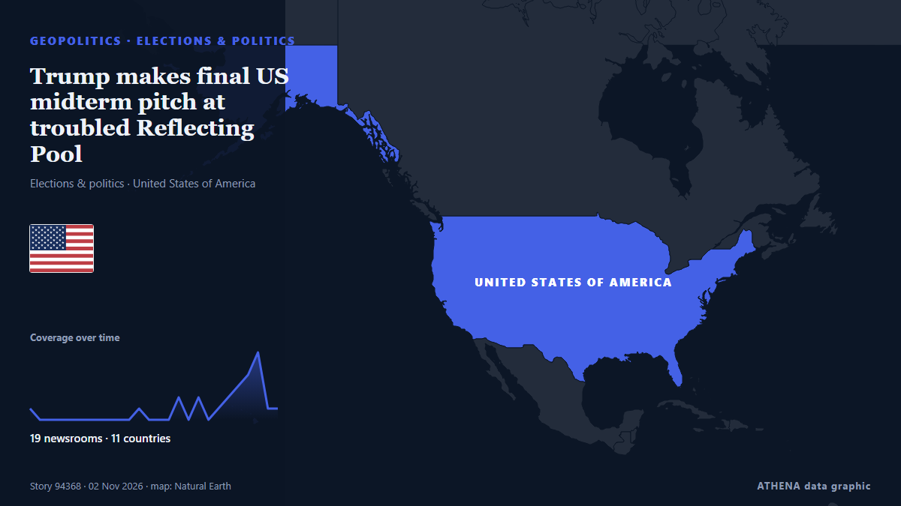

Выборы и политика
СпонсорПри поддержке  Cybernetics and Artificial Intelligence Lab Welcome to the Cybernetics and Artificial Intelligence Laboratory, established at the Department of Business Administration of the National
Cybernetics and Artificial Intelligence Lab Welcome to the Cybernetics and Artificial Intelligence Laboratory, established at the Department of Business Administration of the National
| 20 окт. | 1 |
|---|---|
| 21 окт. | 1 |
| 22 окт. | 0 |
| 23 окт. | 0 |
| 24 окт. | 1 |
| 25 окт. | 0 |
| 26 окт. | 1 |
| 27 окт. | 2 |
| 28 окт. | 4 |
| 29 окт. | 1 |
| 30 окт. | 6 |
| 31 окт. | 1 |
| 1 нояб. | 6 |
| 2 нояб. | 0 |
Заголовки приводятся на английском языке, как они были опубликованы.

Trump makes final US midterm pitch at troubled Reflecting Pool
His speech will contrast the Republicans' efforts making the US 'safer and wealthier' with the Democrats’ 'radical, America Last agenda'. из The Straits Times
Democrats, Trump hold final rallies before midterm elections
Polls show Democrats are near certain to take the majority in the House of Representatives and have a real shot at winning the Republican-held Senate. из Free Malaysia Today
Michigan Democrat's endorsement of Republican ruffles critical Senate race
A prominent Michigan Democrat endorsed Republican Mike Rogers on Sunday, giving President Donald Trump's Republicans an unexpected boost in a critical US Senate race two days before midterm elections… из France 24 English
Brazil’s Lula to attend COP31 climate summit in Türkiye
Our experts unpack what Lula’s victory means for Brazil’s ties with Washington and how it could reshape a region trending right. из Atlantic Council
Judge dismisses Trump administration's lawsuit over two Dan Sullivans in Alaska election
The updated lawsuit cites a new report that Democratic operatives recruited a competitor to confuse voters. из Al Jazeera English
Presidential runoff Iotova Wins over 85% of Votes in Bulgaria's Presidential Runoff in Moldova
Bulgarians voted Sunday in a presidential runoff between two candidates with opposing views on the Ukraine war and relations with Russia as tensions mount in the Black Sea. из France 24 English
Presidential Runoff Turnout Stands at 19.33% as of 16:00
Voter turnout in Bulgaria’s presidential and vice-presidential election stood at 2.4% as of 9:00 a.m.... из Novinite
Trump boosts Republican fight to keep senate and house control in mid-terms
With polling due to take place on Tuesday, Mr Trump appeared in Salina, Kansas, and Dubuque, Iowa, on Sunday. из Irish Examiner
Haley Stevens endorses GOP candidate in Michigan Senate race, spurning Abdul El-Sayed
Rep. Haley Stevens was scheduled to attend a unity event today with Abdul El-Sayed, who beat her in the Democratic primary. из NPR
Trump administration bolsters bid to block Alaska Senate certification
President Donald Trump’s administration filed a revised lawsuit on Thursday seeking to block Alaska’s election results if Republican incumbent Dan Sullivan loses narrowly and issued more than 40… из FBC News
Thousands protest in India's capital against voter roll revision
NEW DELHI: Thousands joined a protest led by opposition politicians in India’s capital on Sunday, renewing demands for the country’s election chief to resign over an overhaul of voter lists they say… из New Straits Times
Indian authorities tighten security ahead of big opposition march in Delhi
Protesters are set to demand the resignation of India's election chief over a controversial revision of voter lists. из CNA (Channel NewsAsia)
US judge orders Trump administration to cease threats to prosecute election officials
The ruling comes days before the US midterm elections that will determine control of Congress. из The Straits Times
US Midterm Early Voting Hits Record 48 Million
Participation has surged in key battleground states. из The Straits Times
Alaska Senate candidate denies knowing about alleged plot to put two Dan Sullivans on ballot
The incumbent Republican running for re-election and allies have accused the Democrats of trying to confuse voters by recruiting a second Dan Sullivan to also stand in the race. из BBC News
Flavio Bolsonaro Claims Political Persecution After Leaving Brazil
Bolsonaro disembarks plane after landing in Florida: AFP. из Gulf News
UN Western Sahara peacekeeping mission left in limbo after US-Russia veto standoff
Just days before the US midterm elections, Washington wants to secure the adoption of a resolution that would accelerate the settlement of the conflict and radically transform MINURSO. из The Africa Report
Pope Leo becomes first pontiff to cast ballot in US election
WASHINGTON, Oct 30 - Pope Leo XIV cast a ballot by mail in the US midterm elections, the Vatican press office said on Friday, a historic first for the American-born pontiff. из The Straits Times